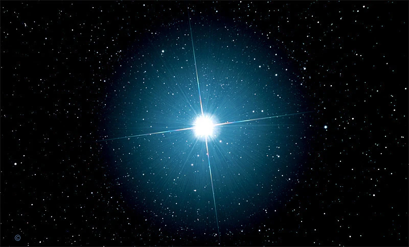

Siirius on öötaeva kõige heledam täht ja seda on Maalt lihtne märgata. See asub Maast umbes 8,6 valgusaasta kaugusel Suure Peni tähtkujus. Siirius paistab väga eredalt, sest see on Päikesest palju heledam ja asub meile suhteliselt lähedal. Tegelikult ei ole Siirius ainult üks täht, vaid kaksiktähesüsteem, mis koosneb tähtedest Siirius A ja Siirius B. Siirius A on süsteemi suurem ja heledam täht, Siirius B aga väike valge kääbus. Siirius oli tuntud juba iidsetel aegadel ning seda kasutati kalendrite ja aastaaegade jälgimiseks.